- OPENOCD Support : This window tries to detect if OpenOCD is correctly installed on the system.
- OpenOCD installed from repository : Most of the time, We can take this solution and install OpenOCD from repository (apt-get install openocd), OESdebug will produce the following output depending on :
- OpenOCD was detected : If OpenOCD was detected, OESdebug will render the image shown below.
- OpenOCD was not detected : If OpenOCD is not detected (not installed from repository), OESdebug will fail to locate it and returns the output shown below.
- OpenOCD installed from sources : If OpenOCD was compiled from the sources, We can indicate to OESdebug the location of the folder (the folder must be the root directory of your OpenOCD which means the folder that contains the tcl folder)
- Adapter Support :
- Existing adapter : OpenOCD ships with predefined list of well known adapters (OESdebug reports the number), the possibility of finding our adapter in the list is high. In this case, We only need to choose the correct adapter config file in the list (which corresponds to our adapter).
- Create a custom adapter : If The adapter is not defined in OpenOCD, We can create it. The adapter must be compliant to one of the protocols supported by OpenOCD. Let's see the steps to add a new adapter :
- Interface protocol : Select the protocol supported by your adapter
- Manufacturer, Vendor ID, Product ID : Plug the adapter to the computer, then click on "Find my Adapter pid,vid and manufacturer" and select your adapter from the list.
- Adapter interface speed : Check the documentation of your manufacturer to get theis value. If this is not available, it is always safe to use a low speed (typically 8 as it is the default).
- MCU Support : Once the adapter was configured, We need to configure the target.
- Existing MCU or board : OpenOCd differentiates between Target and Board files. OESdebug makes it very easy, We only need to select what We are interrested in.
- Create a custom chip : If our board or our chip (CPU, DSP, ..., etc) cannot be found from the Existing MCU or board. We must create it :
- Define new SOC : We must indicate to OpenOCD some of the characteristics of our Chip.
- CHIP Name : The name of your chip (the one written of the top of your microprocesor or your DSP).
- CHIP Type : type of the chip (CPU, DSP, ..etc)
- CHIP Family : the architecture of the chip
- Length of instruction register (IR) : This is crucial for a proper operation of OpenOCD. We can get it from manufacturer documentation or try to dicover it using OpenOCD autoprobe function (see how to do it with OESdebug)
- Endianness of Chip : Look to manufacturer documentation, by default OpenOCD considers this parameter to be little indian
- Enable Memory Config : We can even configure the memory by checking this box. Now, We need information that are completly specific to vendors.
- Memory settings : Some chips have an internal SDRam, it is recommanded to include it. It speeds up operations of OpenOCD
- Starting work area : We must indicate where our memory is mapped
- Size of work area : size of the mapping
- Type of Adresses : We must indicate if the addresses are physical or virtual (MMU is present on the target)
- Back-up work area :
- Flash memory :
- Config File : Allows to generate or update (adding more options not provided by OESDebug) the configuration file "openocd.cfg" (generated at the root directory of OESDbug)
- Menu bar :
- File : Allow some common operations to be made, let's have a look at them :
- Load config : Allows to load cfg and oes files, We can share our scripts and allow other people to look at the configuration We made in GUI friendly way.
- Tools : This section helps to write OpenOCD scripts by exposing some of the features in OpenOCD
- Discover TAP ID : Connect the target platform with the dongle and then fire this option. OpenOCD will try to discover the TAP ID and the length of Intruction Register(IR).
The files "cfg" and "oes" are generated from the configuration tab. The cfg file is used for OpenOCD and oes file (which is made relative to the cfg file) to populate the GUI of OESdebug.
Remember: Both files (cfg and oes) are created at the same time.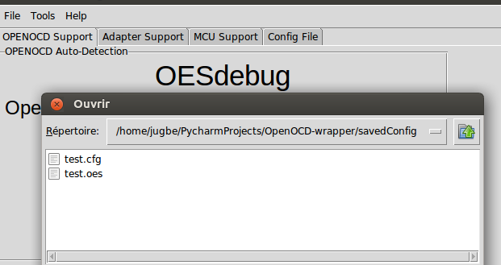We only need to import the cfg file, the oes file will be loaded too (as they have the same name) - Help :
- Tutorial : For documentation
- About Devs : to keep in touch with developers, provide features and bug fixes.
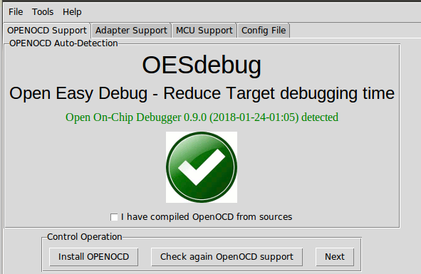
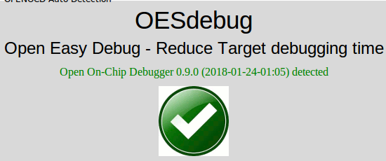
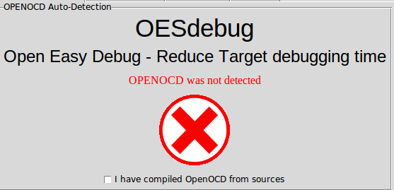
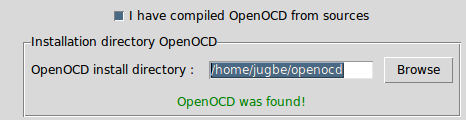
Remark : Make sur that the message OpenOCD was found! is printed.
| Button | Function |
|---|---|
| Install OpenOCD |
If OpenOCD is neither installed on the system nor compiled from sources, We can use this button to quickly install OpenOCD from repository.
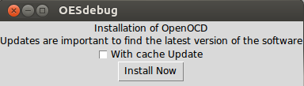
|
| Check again OpenOCD support | After installing OpenOCD using "Install OpenOCD", We need to check again if it was installed. |
| Next | Moves to Adapter Support |
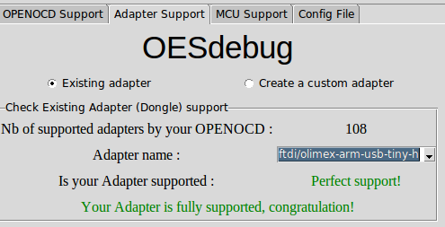
Always try to find your adapter in the list before trying to create one
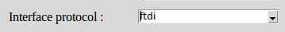
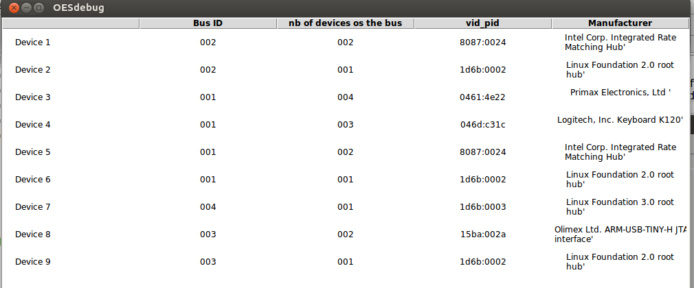
Once the device is selected, the fields(Manufacturer, Vendor ID and Product ID) will be filled by OESdebug.
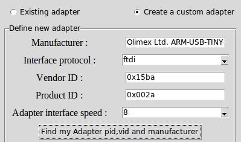
| Button | Function |
|---|---|
| Previous | Moves back to OpenOCD Support |
| Test Your Adapter with OpenOCD | Used to test if OpenOCD is able to detect the adapter |
| Next | Moves to MCU Support |
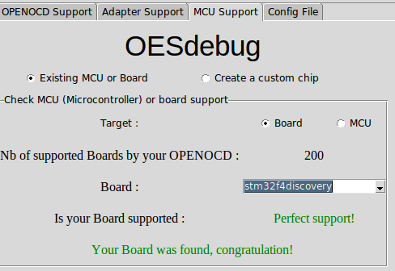
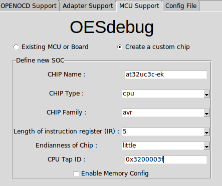
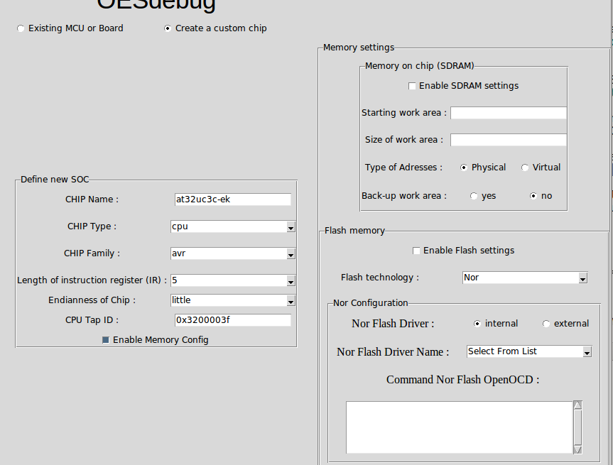
| Button | Function |
|---|---|
| Previous | Moves back to MCU Support |
| Generate File |
Creates the configuration file using the previous settings in "Adapter Support" and "MCU Support".
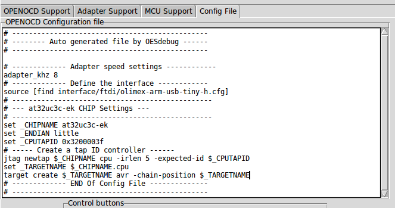
|
| Update file | We can always add more specific target commands to the generated Config file. In this case, We need to use this button to save the changes into openocd.cfg file |
| Start OpenOCD |
Now, it's time to call OpenOCD (OESdebug takes care on the correct way to do it). Write down your admin password and enjoy debugging.
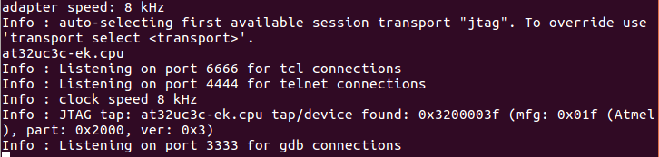
|
| Save Config File |
By default, OESdebug can store the config files in one of it's directories "savedConfig/" (this is recommanded, as We have write permissions). We only need to provide the filename (in the example below it is test). Then click on Save file.
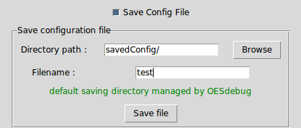
This will generate two files (test.cfg and test.oes in our example above). cfg files can be fed to OpenOCD and oes file is used to load the configuration made to create our cfg files (It is good to share our work with other people in the community) |